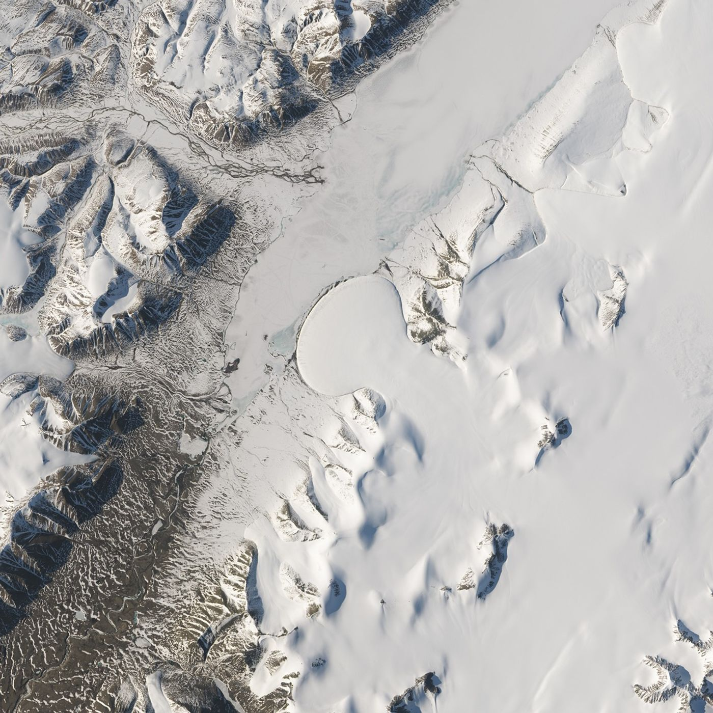

What does it mean to do research?
Earth Last Exam studies how far frontier agents can independently advance Earth science research. We invite tasks drawn from papers and active research: the agent takes over data, models and an existing analysis, chooses what to investigate, and develops a result supported by experiments.
Earth science brings observation, physical models and computation into the same workspace. Measurements have gaps and uncertainty; the same process looks different across scales. A convincing analysis has to connect those pieces and explain where its conclusions hold.

Ice flow meets terrain
Elephant Foot Glacier, Greenland
An image records the glacier’s shape. Investigating the processes behind it also calls for elevation data, boundary conditions and a physical model.
NASA Earth Observatory / Jesse Allen · USGS
Image source
The kind of research we want to measure
- A question worth resolving
- A task comes from a real paper or research workflow. Its author explains what finding or improvement would move the work forward.
- Judgment at the difficult steps
- Several explanations or methods may be plausible. The agent chooses a useful comparison, interprets the result and decides what to try next.
- Sustained experimental work
- The workspace supports hours of computation and repeated experiments, with domain software, substantial data and an existing workflow to build on.
- A result others can use
- A result may be a better method, an explanation supported by experiments or a counterexample that changes the interpretation. Each task defines the evidence needed.
Task development combines an expert reference experiment with trials by frontier agents. Review focuses on the research decisions that make the task difficult, and whether the result would matter to a scientist working in that field.
Preparing the research environment
The agent receives the data and software a researcher would use, along with an analysis it can build on. It can inspect intermediate results, modify the code and run further experiments. The examples below show how this differs across fields.
| Research area | Working tools | Research materials |
|---|---|---|
| Atmosphere & climate | WRF/WPS, MPI, NetCDF, ecCodes, xarray and local model documentation. | Initial and boundary fields, model grids, ensemble metadata and station or satellite observations. |
| Ocean & cryosphere | MITgcm or ROMS; xgcm, TEOS-10 and grid-aware diagnostics. | Bathymetry, forcing, open boundaries, Argo profiles and satellite products, with masks and vertical coordinates. |
| Geology & geophysics | ObsPy, ASPECT, SimPEG or task-specific solvers and their tested numerical settings. | Waveforms, stations, meshes, laboratory measurements, geological priors and instrument responses. |
| Remote sensing & surface processes | GDAL, PROJ, SNAP, rasterio and a reproducible geospatial workspace. | Image stacks, orbit information, calibration, terrain, quality flags and independent field observations. |
| Hydrology & environment | MODFLOW 6, SWAT+ or appropriate process models, with spatial and statistical tools. | Catchment geometry, meteorological forcing, discharge, groundwater and water-quality records. |
The workspace brings together observations, model grids, initial and boundary conditions, local documentation and baseline experiments. Data notes explain coordinates, units and observation times. Large datasets are available through the task environment.
Inside an ELE research task
Contributors explain the research question and what would count as a useful result. The task package includes the data and software needed to investigate it, a reference experiment and the scoring criteria.
instruction.md- The research brief
task.toml- Task configuration
environment/Dockerfile- Software environment
environment/workspace/- Working data and documentation
research/- Scientific background and data notes
solution/solve.sh- The reference experiment
tests/test.sh- Scientific evaluation
What counts as success
Minimum total score
Minimum in every dimension
Core research requirements met
Completion combines the total score, performance in each dimension and the core scientific requirements. Partial scores show useful progress, including a well-supported diagnosis or an experiment that narrows the possible explanations.
The allocation below illustrates a research rubric. Each task publishes its own dimensions and weights; the typhoon task uses a different allocation suited to track, landfall and probability evidence. The three acceptance conditions remain the same.
| Dimension | Points | Evidence |
|---|---|---|
| Core scientific result | 30 | The result answers the research question, with quantitative support from the specified observations and baseline comparisons. |
| Performance under independent conditions | 20 | The improvement carries over to new events, regions or observation conditions. |
| Physical consistency & uncertainty | 20 | Relevant constraints hold; uncertainty is calibrated and supported by evidence. |
| Research evidence | 15 | Controls and ablations distinguish the proposed explanation from alternatives. |
| Repeatable experiments | 10 | The submitted method reproduces its main findings when run again, within the tolerances stated for the task. |
| Use of observations | 5 | The analysis uses observation times, coordinates and units appropriately and accounts for missing or uncertain measurements. |
Each rubric item describes a scientific finding and the evidence that earns full or partial credit. Numerical criteria specify their metric, tolerance and weight. Two domain reviewers assess scientific explanations against the same anchors; a third resolves disagreements. Valid alternative methods receive credit under the same criteria.
Comparing research capability
- Define the research goal, available materials, baseline methods and scoring criteria for each task before running the comparison.
- Use different events, regions or periods for method development and final evaluation, keeping related observations together.
- Run each agent three times per task with the same task-specific data, tools and computing allowance. Report the model, agent configuration and resources used alongside the results.
- Evaluate the method on new cases and score its scientific results and supporting experiments using the task rubric.
- Average success over the three trials within each task, then weight tasks equally. Report uncertainty, results by research area and the stages where agents made or lost progress. Best-of-k results are reported separately.
Contribute a research question
If your work contains a problem that would make a useful task, tell us what remains unresolved. A paper or a short account of the difficulty is enough to begin. We also welcome advisors and engineers who would like to help develop the tasks.